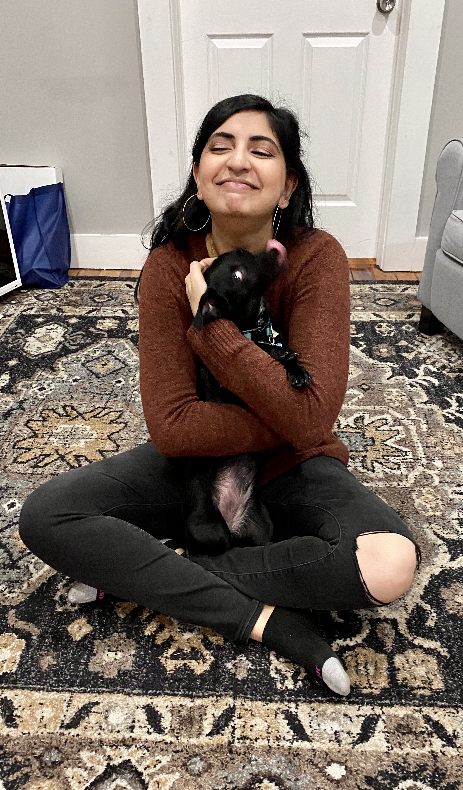

This page will be updated as I settle into my new role at the Perimeter Institute—stay tuned!
I am a Postdoctoral Fellow at the Perimeter Institute for Theoretical Physics primarily working on particle cosmology and HPC simulations of dark matter. In particular, my Ph.D. dissertation focused on HPC simulations and observational signatures of ultralight (or fuzzy) dark matter. As a graduate student, I was co-advised by Nikhil Padmanabhan at Yale and Richard Easther at the University of Auckland in New Zealand. I was also a Future Investigator in NASA Earth and Space Science and Technology (FINESST) and a Fellow of the Franke Program in Science and the Humanities at Yale, which supported my work on mapping Ancient Egyptian diagonal star tables to observational astronomical data.
Apart from research I enjoy science communications, particularly through writing for Astrobites and outreach. I also love teaching, and have dabbled in curriculum development for the Intro Physics Bootcamp for incoming graduate students at Yale. I thrive at the intersection of the sciences and the humanities, and like learning languages: ancient, modern, and computer. When not doing any of the above, I buy too many books (and even read some of them!), drink dangerous amounts of caffeine, play video games that make me nostalgic for the mid-00's, and roller skate.